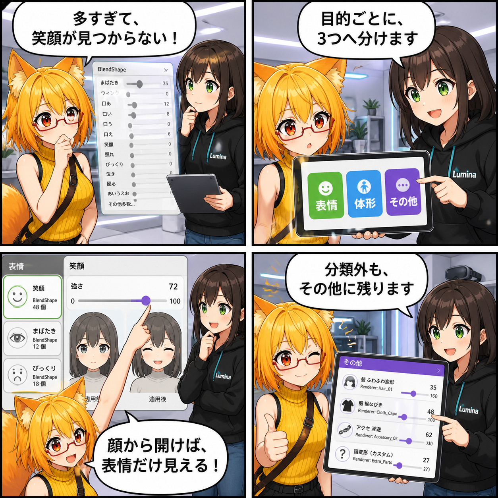

閑話休題：表情・体形・その他を、パーツから迷わず調整
2026-08-15 は集計期間内に main ブランチのコミットがなかったため、現行Viewerの機能を紹介する閑話休題です。今回は、アバターのBlendShapeを「表情」「体形」「その他」に整理し、必要なパーツへ絞って調整できる仕組みを取り上げます。
b6403ee（「残存するシーン設定とネイティブプラグインを追加」）、対象コミットは0件でした。作業ツリーの未コミット差分は、集計期間に実装された事実を確認できないため実績へ含めていません。集計期間は 2026-08-14 03:00:00 JST から 2026-08-15 02:59:59 JST までです。
今回の機能：たくさんのBlendShapeを3つの入口へ
アバターによっては、顔だけでなく髪、衣装、体形など複数のRendererに多くのBlendShapeがあります。名前が並ぶだけの長い一覧では、笑顔を作りたいのか、体形を調整したいのか、それとも分類外の特殊な変形を探したいのかが分かりにくくなります。
現行Viewerは、DesktopとVRの両方でBlendShapeを「表情」「体形」「その他」の3分類に分けます。VABに保存された分類を利用できる場合はそれを優先し、分類情報がない項目も名前から自動分類します。どちらにも当てはまらない項目は消さずに「その他」へ残すため、特殊なBlendShapeにも到達できます。
パーツ一覧から、必要な場所へ直行
パーツ一覧では、BlendShapeを持つRendererに件数付きの導線が表示されます。顔や衣装など調整したいパーツから開くと、そのRendererへ対象を絞り、含まれる項目が最も多い分類タブを最初に表示します。
通常メニューから開いた場合は、表情・体形では各分類を最も多く持つRendererが代表パーツになります。「その他」はひとつのRendererへ限定せず、複数パーツを横断して表示し、Renderer名を含む表示名で所属先を見分けられます。
スライダーで確認し、使わない項目は整理
各BlendShapeは0から100の範囲で調整され、その場でアバターへ反映されます。構造が変わっていないRendererの一覧は再利用しつつ、現在のウェイトだけを更新するため、画面を開くたびに不要な再構築を増やさない作りです。
分類は後から切り替えられ、普段使わない項目は非表示設定へ送れます。非表示設定はアバターごとに保存されるため、項目数の多いモデルでも自分がよく使う操作へ一覧を整えられます。
表情と体形はプリセットにも分けて使える
調整結果は外見プリセットとして扱え、表情だけ、体形だけ、または両方を適用できます。笑顔のプリセットを体形へ影響させず試す、といった使い分けができます。
VABでBlendShapeが遅延準備される場合も、表情・体形画面を開いたタイミングで必要なデータを準備します。最初からすべてを展開するのではなく、使う場面へ処理を寄せる設計です。
4コマの裏話
4コマでは、ろひが大量のスライダーを前に迷うところから始めます。ルミナが3分類を示し、ろひが顔パーツから表情だけに絞って笑顔を調整。最後は「その他」に特殊な変形も残っていると分かり、分類が見つけやすさと取りこぼし防止の両方を担う流れにしました。
まとめ
BlendShape編集で大切なのは、数値を動かせることだけではありません。目的別の分類、パーツからの直行、分類外項目の受け皿、アバターごとの整理を組み合わせることで、モデルごとに違う構成でも必要な調整へたどり着きやすくなります。
本日のひとこと： 迷ったBlendShapeも、入口を分ければちゃんと見つかる。